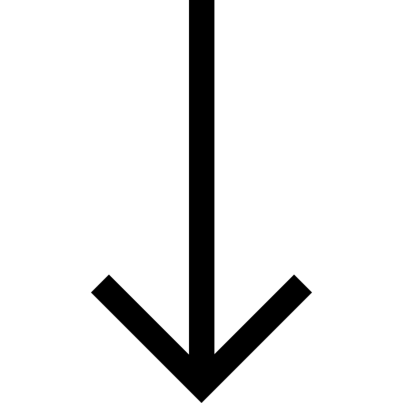

Equipe especializada em
Saúde,
Obesidade e
Manejo
Alimentar.

Saúde
Um ambiente seguro, acolhedor e confidencial onde você é ouvido(a) com profundidade e sem qualquer tipo de julgamento.
Obesidade
Condutas baseadas nas mais sólidas e atuais evidências científicas na área da saúde mental e nutrição comportamental.
Ética
Atuação profissional pautada pelo respeito absoluto à autonomia, sigilo e integridade de cada paciente.
Respeito
Honramos a trajetória, as dores, os ritmos e a história singular de cada corpo que chega até nós.
Como podemos ajudar você?
Atendemos pessoas que buscam fazer as pazes com a mesa através de um olhar integrativo.
Transtornos Alimentares
Tratamento especializado e multiprofissional para anorexia, bulimia, transtorno da compulsão alimentar (TCA) e outros quadros, focando na recuperação integral.
Comer Transtornado
Suporte para quem não tem um diagnóstico fechado, mas vive em um ciclo exaustivo de dietas restritivas, culpa crônica ou ansiedade excessiva ao comer.
Seletividade Alimentar
Abordagem gentil, gradual e respeitosa para expandir o repertório alimentar, trazendo mais conforto e prazer no momento das refeições.
Obesidade
Cuidado integral e humanizado, completamente livre de estigmas de peso, focado na melhora real da saúde física e do bem-estar mental.